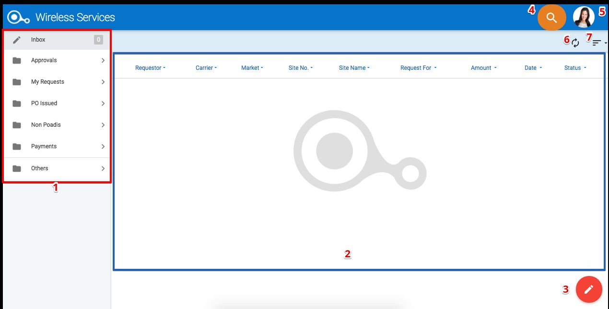
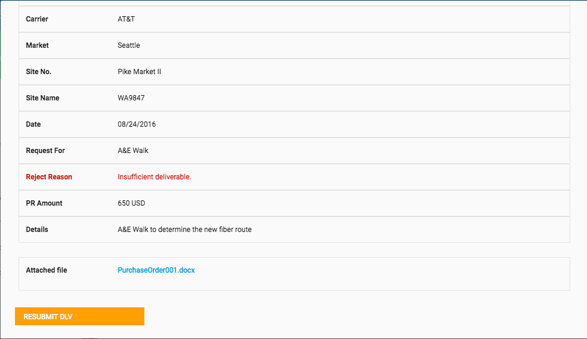
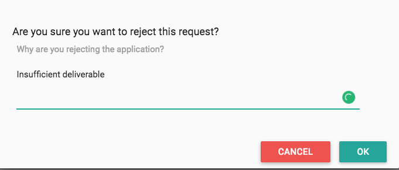
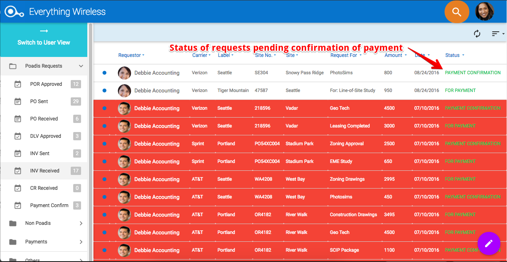
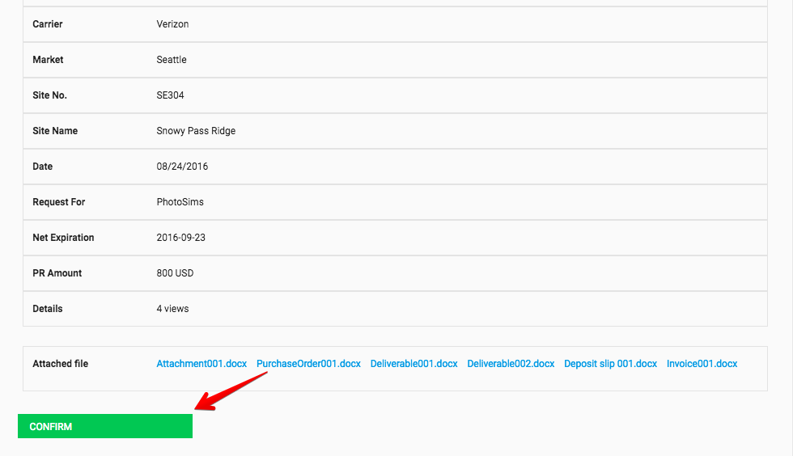
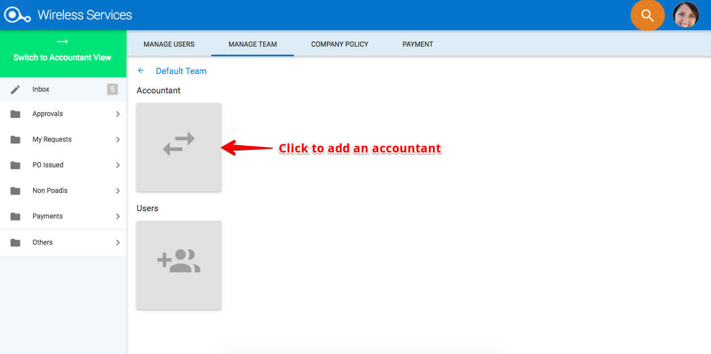
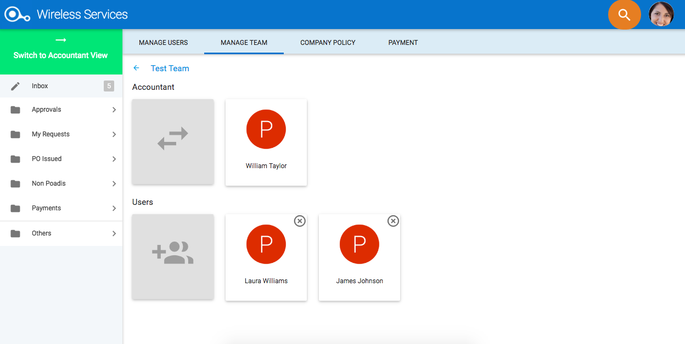
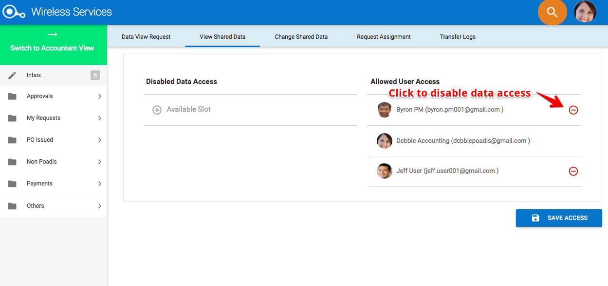
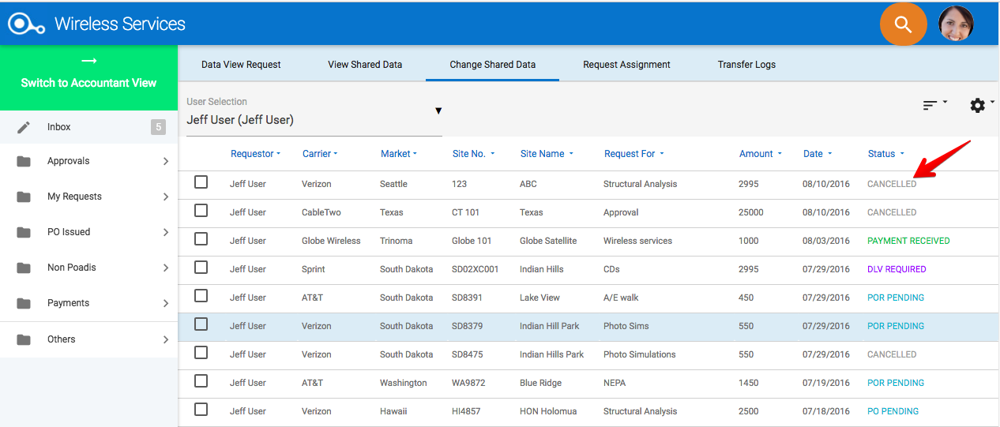
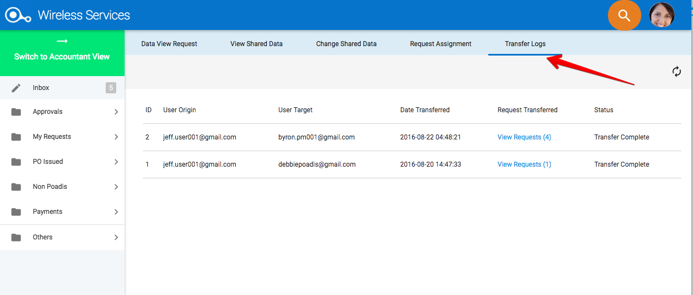

User's Manual
Download the manual here
Introduction
POADIS Overview
POADIS Platform Basics
Login Page
DashBoard
Request Display Window
Users and Roles
How to Use POADIS
User View
I. User as a Requestor
A. Purchase Order Requests
Creating a Purchase Order Request
Viewing a Submitted Purchase Order Request
Changing a Submitted a Purchase Order Request
Cancelling a Request
Viewing an Approved Purchase Order Request
Viewing a Rejected Purchase Order Request
B. Purchase Order
C. Deliverables
Submitting a Deliverable
Viewing a Submitted Deliverable
Viewing an Approved Deliverable
Viewing a Rejected Deliverable
Re-submitting a Deliverable
D. Payments
E. Related Requests
F. Request to non-POADIS user
Using the Portal Link to Approve a Request or a Deliverable
Using the Portal Link to Reject a Request or a Deliverable
Using the Internal Memo Tab to input notes
G. Check Requests
Creating a Check Request
Viewing Approved Check Request
Viewing a Rejected Check Request
Viewing Received Checks
II. User as an Approver
A. Purchase Order Requests
Viewing a Received Purchase Order Request
Approving a Purchase Order Request
Rejecting a Purchase Order Request
B. Deliverables
Viewing a Deliverable
Approving a Deliverable
Rejecting a Deliverable
C. Payments
D. Deliverables
Approving a Check Request
Rejecting a Check Request
Viewing Checks Sen
Accountant View
A. Purchase Order Requests
B. Purchase Orders
Creating a Purchase Order
Viewing a Sent Purchase Order
Viewing a Received Purchase Order
Issuing a Purchase Order (PO) to a Non-POADIS User
Viewing a Purchase Order Sent to a Non-POADIS User
C. Deliverables
D. Invoices
Creating an Invoice
Viewing Sent Invoices
Viewing Received Invoices
Viewing an Invoice Sent by a Non-POADIS User
E. Payments
Issuing a Payment
Viewing Sent Payments
Viewing Payments Pending Confirmation
Confirming a Payment
Viewing Confirmed Payments
Issuing a Payment to a Non-POADIS User
Viewing a Non-POADIS Paid Invoice
F. Check Requests
Releasing a Check
Viewing Check Received
Viewing Checks Sent
Administrator View
A. User Subscription Management
Increasing User Subscription Limit
Decreasing User Subscription Limit
B. Users Management
Adding a User Account
Editing a User Account
Deleting a User Account
C. Teams Management
Creating a Team
Adding Members in a Team
Viewing Members of a Team
Deleting a Member of a Team
Project Manager View
A. Data Sharing Requests
B. Data Sharing Accessibility
Enabling User Data Access
Disabling User Data Access
Filtering Bucket View
C. Shared Data Settings
Cancelling a Request
Archiving Completed Requests
Putting a Request on Hold
Reactivating a Request
D. User Involvement Management
Re-assigning a Request
Viewing Transfer Logs
Common Features
Approving/Rejecting Shared Data Requests
Viewing Archived Transactions
Viewing a Cancelled Request
Using the Search Bar
Filtering Transactions
Sorting Transactions
Introduction: POADIS
POADIS is an acronym that means Purchase Order and Deliverable Invoicing Software. POADIS is a Purchase order and check requesting issuance and receiving software specifically designed for the wireless telecommunication industry. POADIS tracks all the projects you or your company is directly working on to ensure your funding is always in place as fast as possible, the status of every project is known and deliverable approval and invoicing is never missed and completed ASAP.
Users track all of their pending, approved and issued Purchase Orders and Check requests with POADIS. View the status of all your projects in the easy to use dashboard. Once a deliverable is created you submit it through POADIS for approval to your client. Upon approval of the deliverable your designated accountant is notified to ensure all milestone are invoice ASAP.
Project managers can view all their team members active projects and know how much each person is billing out for within a timeframe. Projects can be shifted to other team members to ensure that no milestones are missed.
By using POADIS your company will become more efficient, never miss a billable milestone and reduce your timeframe to NTP or construction complete your sites.
POADIS Platform: Login
You must always log in to authenticate yourself and access your requests, approval and other POADIS information.
- Email: Type your POADIS-registered email address in this field.
- Password: Provide your password.
- Click the Log In button to access your account.
- Sign up: The Super Administrator signs up the organization. The Super Administrator then register other users to POADIS.
- Forgot Password: If you do not remember your password to your account, click this link to be taken to a page where you can request an email with your details. It will contain a link to change your password.
POADIS Platform: Login
The POADIS dashboard is the users main workspace.

- Buckets: POADIS offers different buckets for each transaction. Requests, depending on their status, move from one bucket to another.
- Bucket Contents: Once a bucket is selected, the contents will be displayed here.
- Create The create button allows a user to create a POR or CR. Note, however, that the create button for the accountant allows him to create a PO.
- Search: The search bar allows you to search requests/transactions in your POADIS account.
- User Settings: The user settings allows access to different management features. User settings differ according to a users role.
- Refresh: Allows you to reload the contents of your bucket.
- Filter Reset: Allows you to reset the filters the contents being displayed.
POADIS Platform: Request Display Window
The Request Display Window all the details of a request.
- Document Type: This portion displays the document type (POR, PO, DLV, INV) depending on the status of the request.
- Description: Gives a detailed description of the status of the request.
- Request Overview: Displays general information about the request including Requestor, Status, Request Date, Approved By, and Date Rejected/Approved.
- Purchase Item Details: Displays the purchase items details including POR ID, Carrier, Market, Site No., Site Name, Request For, Amount, Details and Attachments.
- Users Involved: Displays all the users involved in the request process
- Internal Memo: This tab displays memos and attachments made for the request. All users involved within your company can view these memos and attachments.
- implies that a memo has been posted.
- Status field: You may write your memo in this field.
- Click on to attach files to the memo.
- Post button: Use this button post memo.
- Memo Display: Displays memos written for the request.
- Attachments: Displays all attachments for the request.
- Click on to delete an attachment
- History: This tab displays the history of the transaction from the creation of the POR up to the Payment Confirmation. Click on the to view details of each process.
- Revisions: This tab displays all revisions made to the request through the Change Order process.
- implies that a revision has been posted.
- Click on to view details of the revision
- Close
POADIS' Users and Roles
There are five (5) types of POADIS users which includes a Super User, an Administrator, a User, an Accountant, and a Project Manager. The details of these users and their roles are discussed below.
Super User
A Super User is the person who signs up the organization to POADIS and also adds the organizations credit card/payment information into the system. The Super User is the only person whom can increase the accounts number of subscription users. Additionally, he is also a User, an Accountant and a Project Manager and has access to all features available for these different user views.Administrator
An administrator can have the following capabilities:- User Subscription Management
- User Accounts Management
- Teams Management
User
A default POADIS user only has access to his/her account information and the requests that he/she is involved in. A user can either be a Requestor or an Approver.- Requestor capabilities:
- Creates Purchase Order Requests (POR), Related Requests, and Check Requests (CR)
- Submits Deliverables (DLV)
- Approver capabilities:
- Receives and approves PORs, Check Requests, and DLV submissions
Accountant
Every team is allowed to have one designated Accountant. The accountant is responsible for the following tasks:- Issuing a Purchase Order (PO), Invoice and Payments
- Verify and confirm payment received and sent
Project Manager
Every team has a Project Manager who oversees all the transactions of a project. A Project Manager is responsible for the following tasks:- Sending Data Sharing Requests
- Managing Data Sharing Accessibility
- Managing Shared Data Settings
- Managing User Involvement
Approving/Rejecting Shared Data Requests
- Once a Shared Data Request has been received, click on the Accept button to allow a Project Manager access to your data, otherwise, click on the Reject button.
Viewing Archived Transactions
- To view archived transactions, go to the Others - Archived bucket.
- Select the transaction you wish to view. A pop-up window appears and displays the details of the transaction. Note that archived transactions has already been completed.
- Close
Viewing a Cancelled Request
- Go to the Others - Cancelled bucket. A list of cancelled requests will be displayed. A Cancelled status will be displayed for requests that has been cancelled by the requestor.
- Select the cancelled POR you wish to view. A popup window displays all the details of the transaction.
- Close.
Using the Search Bar
The Search bar allows a user to search POADIS by keyword. A user can enter a keyword (i.e. a users name, a POR ID, a site number, site name, etc) into the search bar to view a transaction he/she wishes to view.
- In the search bar, type in the keyword (in this example, a users name will be used) you wish to search.

- Press Enter to confirm the search. All transactions related to the search keyword will be displayed.
Filtering Transactions
To easily view transactions, a user can use the filter options and filter transactions according to (1) Requestor, (2) Carrier, (3) Market, (4) Site No., (5) Site name, (6) Request for, (7) Amount, (8) Date, (9) Status. To filter transactions, do the following:
- Click the dropdown arrow for the column you want to filter. In this example, we will filter the transactions according to their status.
- In the filter menu that appears, check or uncheck the box depending on the data you want to filter.
- The new filter will be applied.
Sorting Transactions
A user can sort transactions in ascending or descending order by doing the following:
- Click the dropdown arrow for the column you want to sort. In this example, we will sort the transactions by Requestors in ascending order.
- In the sort menu, select the sorting order depending on how want your data to be sorted.
- The sorted transactions will now be displayed.
Creating a Purchase Order Request
- To create a Purchase Order Request, click on the at the lower right corner of the page.
- From the options provided, select POR.
- In the popup that appears, enter the email address of the POADIS or non-POADIS recipient.
Note: For non-POADIS recipients, an email containing the POR and Approval Link will be sent. Additionally, a request cannot be sent to a POADIS user and non-POADIS user at the same time. - Fill in required fields. You may also attach any associated documents by uploading it in the Attachments section.
Note: Once a document has been uploaded and submitted it can never be deleted as document becomes part of the transaction history.
- Click on Submit. Once a POR has been submitted, a unique POR ID is created and displayed. This ID will be associated with that request for the entire process for both parties.
- Click on OK. Purchase Order Requests pending approval will be displayed in the My Requests - Pending bucket with a POR Pending status.
Note: For non-POADIS recipients, an email containing the POR and Approval Link will be sent.

Viewing a Submitted Purchase Order Request
- Go to My Requests Pending bucket. All submitted PORs waiting for approval will be in this bucket.
- In the Pending bucket, select the transaction you wish you view. All details of this transaction will be displayed in the popup window that appears.
- Close.
Changing a Submitted a Purchase Order Request
A Change Order can be made anytime by the initial requestor as long as it is not past the DLV Approved status.
- To change an existing POR, select the POR you want to change. Details of the POR will be displayed in the popup window that appears.
- Click on the Change Order button. Note, however, that only the Amount, Details and Attachments fields can be changed.
- Once changes have been made, click on Submit. All changes in a POR will be saved and displayed in the Revisions tab.
Cancelling a Request
- Go to the My Requests - Pending bucket. All requests pending approval are stored in this bucket.
- Select a POR you wish to cancel. Note, however, that approved PORs can no longer be cancelled.
- In the popup window that appears, click on the Cancel Request button to cancel the selected POR. Note that a canceled request can no longer be reactivated.
- Click OK to confirm the action, Cancel otherwise. All cancelled requests are moved to the Others - Cancelled bucket.

Viewing an Approved Purchase Order Request
- To view an approved POR, go to My Requests Approved. All approved PORs are displayed with a PO Pending status pending the issuance of a Purchase Order.
- In the Approved bucket, select the transaction you wish you view. All details of this transaction will be displayed in the popup window that appears.
- Close
Viewing a Rejected Purchase Order Request
- To view a rejected Purchase Order Request, go to the My Requests - Rejected bucket. Note: Once a POR has been rejected, the Requestor can no longer continue with the process.
- Select the POR you wish you view and the details of the transaction will be displayed in the popup window that appears. Note, however, once a POR has been rejected, the whole process will be terminated.
- Close
Purchase Orders
Once a Purchase Order Request has been approved, the Approvers Accountant sends a Purchase Order (PO) to the Requestor.
Viewing a Purchase Order
- To view received purchase orders, go to the Poadis Requests - PO Received bucket. Note that all POs pending submission and approval of a deliverable will have the DLV Required status.
- Select the transaction you wish to view and all the details will be displayed in the popup window that appears.
- Close
Submitting a Deliverable
- To create and submit a deliverable, go to PO Issued PO Received bucket.
- Select the desired PO from the bucket and in the pop-up window, click on the Create DLV button.
- Upload the files you wish to attach as a deliverable for this PO in the Attachments Section. Note that other details of the transaction can no longer be edited.
- Click on Submit. A notification will be sent to the approver. Subsequently, the request will move to PO Issued - DLV Submitted with a DLV Pending status.

Viewing a Submitted Deliverable
- To view a submitted deliverable, go to PO Issued DLV Submitted. All POs with a pending approval for the deliverables will have the DLV Pending status.
- In the DLV Submitted window, choose the PO you wish to view. Details of the PO and the submitted deliverable will be displayed.
- Close.
Viewing an Approved Deliverable
- To view an Approved Deliverable, go to PO Issued DLV Approved. A request with an approved DLV will have the INV Pending status pending issuance of an invoice by the requestors accountant.
- Choose the transaction you wish to view. A popup will display the approval and details of the PO and attached deliverable.
- Close.
Viewing an Rejected Deliverable
- To view a rejected deliverable, go to PO Issued - DLV Rejected.

- Once a transaction is selected, a popup window appears and displays the details of the transaction including the Reject Reason. The requestor can re-submit a DLV once it has been rejected.

- Close.
Re-submitting a Deliverable
- A requestor may resubmit a deliverable once it is rejected. To do this, go to PO Issued - DLV Rejected.
- Select a request and click on the Resubmit DLV button in the popup window to re-submit a deliverable.

- Attach any documents in the Attachments section. Note that a user can only edit the Attachments section of this page.
- Submit: Once a deliverable has been successfully re-submitted, the Request will be moved back to the PO Issued - DLV Submitted bucket with a DLV Pending status. Consequently, a notification will be sent to the Approver about the new deliverable submitted.
Payments
The request process for the Requestor ends as soon as the DLV has been approved. However, the requestor may view payments received for requests that he/she made.
Viewing Received Payments
- To view received payments, go to Payments Received. All records of confirmed received payments are stored here with the Payment Received status.
- Choose the transaction you wish to view. Details of the payment will be displayed in the popup window.
- Close
Related Requests
A received Purchase Order Request can be sent as a Related Request to another client.
Creating a Related Request
- In your Inbox folder, select a Purchase Order Request pending your approval.
Note: A Related Request can only be created for unapproved Purchase Order Requests (with a POR Pending status).
- Once a POR has been selected, a popup window appears which displays the details of the transaction. To create a related request, select the Create Related button.
- In the popup window that appears, fill in the new receiver and other necessary details for the request. In the screenshot below, a change in the amount originally requested will be made (from $500.00 to $750.00)

- Click on Submit. A Related Request generates a new POR ID and is only visible to the creator of the Related Request and the new Approver. The original Requestor of the POR will not have access to this request.
Consequently, a implies a Related Request has been created for the original POR. The Related Request will be displayed in the My Requests - Pending bucket of the new requestor
-
A signifies that a Related Request has been approved.
Requests to a non-POADIS User
A POADIS user may send a Purchase Order Request (POR) to a non-POADIS user. The POADIS user can create a POR, submit deliverables (DLV) the same way he/she does to another POADIS user.
The non-POADIS user receives notifications through his/her email with a one-time link that will lead him/her to the POADIS portal. This portal allows a non-POADIS user to approve or reject PORs and DLVs
In the event that the non-POADIS user doesnt use the portal and sends confirmation to each transaction through email, the POADIS user uses the Portal Link to manually approve/reject transactions. Each transaction done will be displayed in the Internal Memo where the POADIS requestor can also attach documents/evidences to support the transaction.
Using the Portal Link to Approve a Request or a Deliverable
If a non-POADIS user decides not to use the POADIS portal, a POADIS user can manually approve/reject transactions by doing the following:
- Go to My Request - Pending bucket. Select a POR you wish to view.
- In the History tab, click on the Portal Link.

- Click on Approve if the recipient approved the POR or deliverable.
- Click OK to proceed or Cancel to cancel the transaction.
Using the Portal Link to Reject a Request or a Deliverable
If a non-POADIS user decides not to use the POADIS portal, a POADIS user can manually approve/reject transactions by doing the following:
- Go to My Request - Pending bucket. Select a POR you wish to view.
- In the History tab, click on the Portal Link.

- Click on Approve if the recipient approved the POR or deliverable.

- Click OK to confirm the action, otherwise, Cancel. An email notification will be sent to the non-POADIS user. Subsequently, an approved DLV will go to PO Issues - DLV Approved, otherwise, it will go to My Requests - DLV Rejected.
Using the Internal Memo Tab to Input Notes
When a POADIS user manually approves a POR/DLV through the Portal Link, a notification will be sent to the Request Approvers (non-POADIS user) email. Additionally, it will be posted in the Internal Memo tab of the transaction.
A POADIS requestor can attach evidences/documents that will support each transaction by doing the following:
- Go to Internal Memo Tab.
- In the text box, write a memo that will support each transaction.
- Attach documents/files that will support the transaction.
- Click on the Post button. The memo and attachments will be displayed in the page.
Creating a Check Request
- To create a Check Request (CR), click on the located at the lower right corner of the dashboard
- Select from the options that appear.
- In the popup window that appears, enter the Approvers email address.
- In the details section, fill in the information for the check request. Note that all fields are required.
- Optional: Upload any relevant documents for attachment.
- Once completed, click on Submit, otherwise, Cancel. A POADIS ID will be generated for the check request. Additionally, the Check Request will be stored in the My Requests - Pending bucket with a CR Pending status.
Viewing Approved Check Request
- To view an approved check request, go to the My Requests - Approved bucket. All rejected Check Requests will have a CR Rejected status.
- Select a transaction you wish to view and a popup window appears and displays the details of the transaction.
- Close
Viewing a Rejected Check Request
- To view an approved check request, go to the My Requests - Approved bucket. All Approved Check Requests will have a Check Pending status
- Select a transaction you wish to view and a popup window appears and displays the details of the transaction.
- Close
Viewing Received Checks
- To view received checks, go to the Payments - Check Received bucket. All checks received will have the Check Received status.
- Select the transaction you wish to view and a popup window appears and displays details of that transaction.
- Close. The received check may now be used to pay its intended payee which was specified in the "Payable To" field in the check request.
Viewing a Received Purchase Order Request
- To view a received Purchase Order Request, go to Inbox. All PORs pending approval will have a POR Pending status.
- Select a POR you wish to view. In the popup window that appears, all details of the POR will be displayed.
- Close.
Approving a Purchase Order Request
- To approve a Purchase Order Request, go to your Inbox. All PORs pending approval will have a POR Pending status.

- In the Inbox folder, select a POR you wish to approve. All details of this transaction will be displayed in the popup window that appears.
- Once the information has been verified, select on the Approve button for the approval of the request.
- Confirm the action by clicking on the OK button. An approved POR will have a PO Pending status pending the issuance of a Purchase Order and will be moved to the Approvals - POR bucket with an Approved status. A notification of the approval will also be sent to the Requestor.

Rejecting a Purchase Order Request
- Once a new Purchase Order Request has been received, it goes to the approvers Inbox. To reject a POR, go to your Inbox.
- Once the information has been verified, select on the Reject button to reject the request.
- In the popup window that follows, enter the Reject Reason.
- Confirm the action by clicking on the OK button. A rejected POR will go to the Approvals - POR bucket with a Rejected status.
Viewing a Deliverable
- To view a deliverable submission, go to your Inbox. All DLV submissions will have a DLV Pending status.
- Select the transaction you wish to view. A popup window appears and displays all details of the transaction.
- Close.
Approving a Deliverable
- To approve a deliverable, go to your Inbox. All requests pending DLV approval will have the DLV Pending status.
- Select the transaction you wish to approve. All details will be displayed in the popup window that appears.
- Once verification of the deliverables has been completed, select the Approve button to approve the submission.
- Click OK to confirm the action. Once a deliverable has been approved, the POR will be moved to Approvals - DLV bucket with an Approved status.
Rejecting a Deliverable
- To reject a deliverable, go to your Inbox. All requests pending DLV approval will have the DLV Pending status.

- Select the transaction you wish to approve. All details will be displayed in the popup window that appears.
- Select the Reject button to reject the submission.
- In the popup that appears, enter reason for rejecting the submission.
- Click OK to confirm the action. A rejected deliverable will have a Rejected status and will be stored to the Approvals - DLV bucket. Note, however, once a DLV submission has been rejected, the requestor can still re-submit a deliverable.
Viewing Payment Sent
- To view sent payments, go to the Payments - Sent bucket. All payments sent for requests are displayed here with a Payment Sent status.
- Select the transaction you wish to view. A popup window appears and displays all details of this transaction.
- Close.
Approving a Check Request
- To approve a check request (CR), go to your Inbox. All CRs pending approval will have the CR Pending status.

- Select the CR you wish to approve and a popup window appears to display the details of the request.
- Click on the Approve button to approve the request.
- Click OK in the popup window that appears to confirm the action, Cancel, otherwise. Once the check request has been successfully approved, a notification will be sent to the Approvers Accountant for check releasing. An approved CR will be moved to the Approvals - CR bucket with an Approved status.
Rejecting a Check Request
- To reject a check request (CR), go to your Inbox. All CRs pending approval will have the CR Pending status.
- Select the CR you wish to reject and a popup window appears to display the details of the request.
- Click on the Reject button to reject the request.
- In the popup window that appears, enter a reject reason. The reject reason can be viewed by the requestor.
- Click OK in the popup window that appears to confirm the action, Cancel, otherwise. Once the check request has been rejected, the Requestor will be notified. A rejected CR will be moved to the Approvals - CR bucket with a Rejected status and will no longer be processed.
Viewing Check Sent
- Once the approvers accountant has released a check for a request, the approver will also be notified. To view sent checks, go to the Payment - Check Sent bucket. All CRs which has already been issued checks will have the Check Sent status.
- Select a transaction you wish to view and a popup window appears and displays the details of that transaction.
- Close.
Viewing an Approved Purchase Order Request
- To view an approved POR, go to Poadis Requests - POR Approved. All approved PORs will have a PO Pending status pending for the issuance of a Purchase Order.

- Select the transaction you wish to view. A popup window displays the details of this transaction.

- Close.
Creating a Purchase Order
- Once a Purchase Order Request has been approved, a Purchase Order has to be issued. To create a purchase order, go to Poadis Requests - POR Approved bucket. All approved PORs will have a PO Pending status pending for the issuance of a Purchase Order.
- Select the transaction and the details of the POR will be displayed.
- Once the details has been verified, click on the Create PO button.
- In the popup window that appears, verify the details of the Purchase Order or upload attachments for the PO. Other details of the request cannot be edited.
- Click Submit. A notification will be sent to the Approver and the Requestor. Additionally, PO issued will be moved to the Poadis Requests - PO Sent bucket with the DLV Required status.
Viewing a Sent Purchase Order
- To view a sent purchase order, go to Poadis Requests - PO Sent. All POs pending DLV submission will have a DLV Required status.

- In the PO Sent bucket, select the transaction you wish to view. The details of this transaction will be displayed in the popup window that appears.
- Close.
Viewing a Received Purchase Order
- To view received purchase orders, go to Poadis Requests - PO received bucket. Note that all POs pending submission and approval of a deliverable will have the DLV Required status.

- Select the transaction you wish to view and all the details will be displayed in the popup window that appears.

- Close.
Issuing a Purchase Order (PO) to a Non-POADIS User
In the case wherein a non-POADIS request has been received and approved, the POADIS accountant can issue a Purchase Order (PO) for that request. In issuing a PO, an approver for the deliverable must also be assigned.
- To issue a Purchase Order (PO) to a non-POADIS user, click on located at the lower right corner of your dashboard and select .
- In the Purchase Order popup window, fill in the information required.
- Click Submit.
- Click OK to confirm the action. The PO will then be displayed in the Non POADIS - PO Issued bucket with a DLV Required status.

Viewing a Purchase Order Sent to a Non-POADIS User
- To view a Purchase Order sent to a Non-POADIS user, go to Non Poadis - PO Issued.
- Select the transaction you wish to view. All details of this transaction will be displayed in the popup window that appears
- Close.
Viewing an Approved Deliverable
- To view an approved deliverable, go to Poadis Requests - DLV Approved. Note that only approved deliverables can be viewed by the accountant.
- Select the transaction you wish to view. The details of each transaction will be displayed in a popup window.
- Close.
Creating an Invoice
- Go to Poadis Requests - DLV Approved. All POs pending the issuance of an invoice has an INV Pending status.

- Select a transaction from the list. A popup window that appears will display all the details of this transaction.
- Once all information has been verified, click the CREATE INV to create an invoice.
- In the popup window that appears, enter the payment terms and upload any attachments. Note, however, that other details of this transaction cannot be edited.
- Click Submit. Once an Invoice has been sent, the transaction will move up to the Poadis Requests - INV Sent bucket with a For Payment status. Additionally, a notification will be sent to the Approvers accountant. (In the case of a non-Poadis user, a Portal Link can be sent to the Approvers accountant for the issuance of an invoice.
Viewing Sent Invoices
- To view invoices sent, go to Poadis Request - INV Sent. All sent invoices pending payment will have the For Payment status.

- In the INV Sent bucket, select the invoice you wish to view. All details will be displayed in the popup window that appears.
- Close.
Viewing Received Invoices
- To view received invoices, go to Poadis Requests - INV Received.

- In the INV Received bucket, select the transaction you wish to view. All details will be displayed in the popup window that appears.
- Close.
Viewing an Invoice Sent by a Non-POADIS User
- To view a invoice received from a Non-POADIS user, go to Non Poadis - INV Received.
- In the INV Received bucket, select the transaction you wish to view. All details of this transaction will be displayed in the popup window that appears.
- Close.
Issuing a Payment
Once an Invoice is received, a payment can be issued by doing the following:
- Go to Poadis Requests - INV Received.
- Select the transaction from the list and a popup window appears and displays all the details of that transaction.
- Once a payment for the transaction has already been issued (may be done outside POADIS), click the PAID button.
- Attach any proof of payment in the popup window that appears.
- Click PAID to complete the payment transaction. Once a payment has been issued, it is displayed in Poadis Requests - INV Received bucket with a Payment Confirmation status. Additionally, a notification will be sent to the Requestors Accountant.

Viewing Sent Payments
- To view sent payments, go to Payments - Sent. All records of sent payments will be stored here.
- In the Sent bucket, select the transaction you wish you view. All details of this transaction will be displayed in the popup window that appears.
- Close.
Viewing Payments Pending Confirmation
- To view received payments, go to the Poadis Requests - Payment Confirm bucket. All requests pending payment confirmation will be displayed here with a Payment Confirmation status.
- In the Received bucket, select the transaction you wish you view. All details of this transaction will be displayed in the popup window that appears.
- Close.
Confirming a Payment
- Go to Poadis Requests - Payment Confirm bucket. All requests pending payment confirmation have the status Payment Confirmation.
- Select the payment transaction and a popup window displays the details of the transaction.
- Once payment has been verified, click on the CONFIRM button.

- Click OK to complete the action. Once a payment has been confirmed, the transaction moves to the Payments - Received bucket with a Payment Received status.
Viewing Confirmed Payments
- To view confirmed payments, go to the Payments - Received bucket. All confirmed payments received are displayed in this bucket with a Payment Received status.

- Select a transaction you wish to view. A popup window appears and displays all the details of this transaction.
- Close.
Issuing a Payment to a Non-POADIS User
- To issue a payment to a non-POADIS user, go to Non-POADIS - INV Received bucket
- Select the invoice and a popup window will display the details of the invoice.
- To issue a payment, click the Paid button.
- Attach any proof of payment in the attachment sections, then click on PAID. All paid invoices will be displayed in the Non-POADIS - Paid Invoice bucket.

Viewing a Non-POADIS Paid Invoice
- To view an invoice paid to a Non-POADIS user, go to the Non Poadis - Paid Invoice bucket.
- Select the transaction you wish you view. All details of this transaction will be displayed in the popup window that appears.
- Close.
Releasing a Check
- Go to the POADIS Requests - CR Approved bucket. All approved CRs will have the Check Pending bucket.

- Select a transaction to view. A popup window appears and displays the details of the transaction.
- Click on Release Check to issue a check.
- Click OK to confirm the action, Cancel otherwise. Once a check has been successfully released, the check request will be moved to the Payments - Check Sent bucket with a Check Sent status.

Viewing Check Received
- To view checks that has been received, go to the Payments - Check Received bucket. Check Requests will have the Check Received status.
- Select a transaction you wish to view and a popup window appears and displays the details of the transaction.
- Close.
Viewing Checks Sent
- To view checks that has been issued, go to the Payments - Check Sent bucket. Check requests will have a Check Sent status once check has been released.
- Select a transaction you wish to view and a popup window displays the details of that transaction.
- Close.
Increasing User Subscription Limit
- An Administrator can create additional accounts for the organization. To do this, go to User Settings - Administration. Note, however, that only the super admin (the owner and creator of the first account that has the credit card) can add and remove users.
- Go to Payment tab.

- Enter the number of user subscription you wish to add into the organization. Note: An additional user account will be billed $40 each.
- To confirm payment for the additional user account, click on the button.
- Click OK to confirm the action. Once addition of user accounts has been confirmed, monthly payment will be increased according to the number of users available for the organization (at $40/user).
Decreasing User Subscription Limit
- An Administrator can remove unused or excess user accounts of the organization. To do this, go to User Settings - Administration.
- Go to Payment tab.
- Enter the number of user accounts you wish to remove.

- To confirm payment for the removal of excess user account, click on the button.
- Click OK on the popup window that appears to confirm the removal of the account, Cancel otherwise. Once removal has been confirmed, monthly payment will be reduced according to the number of users available for the organization (at $40/user).
Adding a User Account
- To add a user, go to User Settings - Administration.

- In the Manage Users tab, click on the Add button. Note that an administrator can only add a new user account if the limit for users has not been reached, otherwise, this feature will be disabled.
- Enter the required account information.
- Assign roles to the account. An account can be any of the following: User, Manager, Accountant, Admin.
- Once completed, click on the Create button.
- Click OK to confirm creation of the account, Cancel otherwise. The newly-created account can will be added to the list of users found in the Manage Users tab.
Editing a User Account
- To edit an existing user account, go to User Settings - Administration.

- In the Manage Users tab, click on the next to the account you wish to edit.
- Update the user account information. All details including Roles assignment can be updated.
- Once completed, click on the Update button
- Click OK to confirm the action.
Deleting a User Account
- To delete a user account, go to User Settings - Administration.

- In the Manage Users tab, click on the next to the account you wish to delete.
- Click on OK to confirm the action. Once an account has been successfully deleted, it will no longer appear in the Users list.
Note, however, that an account can only be deleted once all pending actions for that account has been completed. For example, if an Accountant has a pending invoice to be issued, he or she has to complete that action before the account will be deleted from the list.
Creating a Team
- To create a new team, go to User Settings - Administration.

- In the Manage Team tab, click on the found at the lower right bottom of the page.
- Enter the name of the team in the popup window that appears.
- Click on the Create button to create the new team, Cancel otherwise.
-
Once the team has been successfully created, it will be displayed in the list of teams in the Manage Team tab.
Adding Members in a Team
- To add a new member into a team, go to User Settings - Administration.

- In the Manage Team tab, click on the team where you wish to add new members.
- Once the team page has been opened, click on the user type you wish to add. To add a new accountant, select on the Accountant button and select an available accountant to be added into the team.

-
To add users into the team, click on the Users button. Select the users to be added into the team.
- Once new members has been entered, click on the Save button, Cancel otherwise. The new members added in the team will be displayed.
Viewing Members of a Team
- To view the members of a team, go to User Settings - Administration.

- In the Manage Team tab, select the team you wish to view from the list.

- Close.
Deleting a Member of a Team
- To delete a member of a team, go to User Settings - Administration.

- In the Manage Team tab, select the team to which that member belongs to.
- In the Teams page, select on at the upper right corner of the member you wish to delete.
- Click OK to confirm the action.
-
Note, however, that a member with pending actions (e.g. pending issuance of an invoice) cannot be deleted.
Sending a Data View Request
- Go to User Settings - Project Management
- In the Data View Request tab, choose the user you wish to send a request to and click on Send Request.
- Click OK to confirm. A Request notification will be sent to the user.
-
The request to view data will have a Pending status and changes to Ready to View when the request has been approved.
Enabling User Data Access
- To enable user data access, go to User Settings - Project Management.

- In the View Shared Data tab, click on next to the user that you wish to enable the data access for. Once this is done, the user will be displayed at the Allowed User Access section.
-
Similarly, all transactions done by that user will be integrated with your bucket

Disabling User Data Access
- To disable user data access, go to User Settings - Project Managementn.

- In the View Shared Data tab, click on next to the user that you wish to disable the data access for. Once this is done, the user will be displayed at the Disabled Data Access section. Similarly, all transactions done by that user will be no longer be integrated and displayed in your bucket.


Filtering Bucket View
The Project Manager can use the Filter Options to easily help him/her view other users transactions integrated in his bucket.
- Go to Filter Options.
- Select an option. The Show All option displays all transactions from all users you have access to. The Show Mine option displays all transactions you are involved in. The Show Others displays all transactions of the users you have access to.
Cancelling a Request
A request done by one of the members of the team can be cancelled by the Project Manager (PM). However, a PM can only do so if he has access to that users data. To request data sharing, follow the instructions in how to send a data request. To cancel a request, do the following:
- Go to User Settings - Project Management.
- In the Change Shared Data tab, select the user whose data you wish to view. Once a user has been selected, the list of data/transactions for this user will be displayed.

- Tick on the
 to select the transaction/s you wish to cancel.
to select the transaction/s you wish to cancel.
- Click on the
 found at the upper right corner of the bucket.
found at the upper right corner of the bucket. - Select Cancel from the options to cancel the selected the transaction.
- Click OK to confirm the action, Cancel otherwise.
Note: All canceled transactions will go to the Others - Cancelled with the Cancelled status

Archiving Completed Requests
A Project Manager (PM) can archive another users transaction that has already been completed (Payment Confirmed). However, a PM can only do so if he has access to that users data. To request data sharing, follow the instructions in how to send a data request. To archive a request, do the following:
- Go to User Settings - Project Management.

- In the Change Shared Data tab, select the user whose data you wish to view. Once a user has been selected, the list of data/transactions for this user will be displayed.


- Tick on the of the transaction you wish to archive. Only transactions with the Payment Received and Check Received status can be archived.
- Tick on the
 of the transaction you wish to archive. Only transactions with the Payment Received and Check Received status can be archived.
of the transaction you wish to archive. Only transactions with the Payment Received and Check Received status can be archived. - Select Archive from the options to archive these transactions.
- Click Ok to confirm the action in the popup window that appears, Cancel otherwise. All archived transactions will be displayed in theb Others - Archived bucket of both the owner of the transaction and the PM.
Putting a Request on Hold
A Project Manager (PM) can put a users transaction on hold. However, a PM can only do so if he/she has access to that users data. To request data sharing, follow the instructions in how to send a data request. To put a transaction on hold, do the following:
- Go to User Settings - Project Management.

- In the Change Shared Data tab, select the user whose data you wish to view. Once a user has been selected, the list of data/transactions for this user will be displayed.


- Tick the
 to select the transaction/s you wish to put on hold.
to select the transaction/s you wish to put on hold. - Once transactions has been selected, click on the
 found at the upper right corner of the bucket.
found at the upper right corner of the bucket. - Select Hold from the options to put the selected transaction on hold.
- Click OK to confirm the action in the popup window that appears, Cancel otherwise. All transactions that are put on hold will have the On Hold status. A transaction that is On Hold can be reactivated.
Reactivating a Request
Requests that are put on hold can be reactivated by a Project Manager. However, a PM can only do so if he/she has access to that users data. To request data sharing, follow the instructions in how to send a data request. To put a transaction on hold, do the following:
- Go to User Settings - Project Management.

- In the Change Shared Data tab, select the user whose data you wish to view. Once a user has been selected, the list of data/transactions for this user will be displayed.

- Tick the to select the transaction/s you wish to reactivate.
-
Optional: To view all On Hold transactions, select On Hold from the Status filter options
- Once a transaction has been selected, click on the found at the upper right corner of the bucket.
- Select Reactivate from the options to reactivate an on hold transaction.
- Click on the Ok button to confirm the action, Cancel otherwise. The status of the transaction before it was put On Hold will be reverted.
Re-assigning a Request
- To transfer the involvement of a transaction, go to User Settings - Project Management.
- In the Request Assignment tab, select the user whose data you wish to view. Once a user has been selected, the list of data/transactions for this user will be displayed.

-
The figure below shows all the transactions where Jeff (User) is involved.
- Tick the to select the transactions you wish to re-assign.
- Once the transaction has been selected, click on the found at the upper right corner of the bucket and select Assign.
- In the popup that appears, select the user to which the transactions will be transferred to.
- Once the user has been selected, click on the Assign button to confirm the action, Cancel otherwise.
- Click on OK to confirm the action. Once a transaction has been successfully transferred to another user, it will no longer be available in the original owners bucket. On the other hand, the new owner of the transaction will be able to view the newly assigned transaction in its respective bucket. Additionally, a record of the reassignment will be viewed in the Internal Memo tab of each request.
Viewing Transfer Logs
All Request Reassignment history will be viewed in the Transfer Logs tab. To view the history of request reassignments and their status, do the following:
- Go to User Settings - Project Management.
- In the Transfer Logs tab, the history of all request reassignments done by the PM will be displayed.

- Click on View Request link to display details of each log. A successfully reassigned transaction will have the Transfer Complete status.